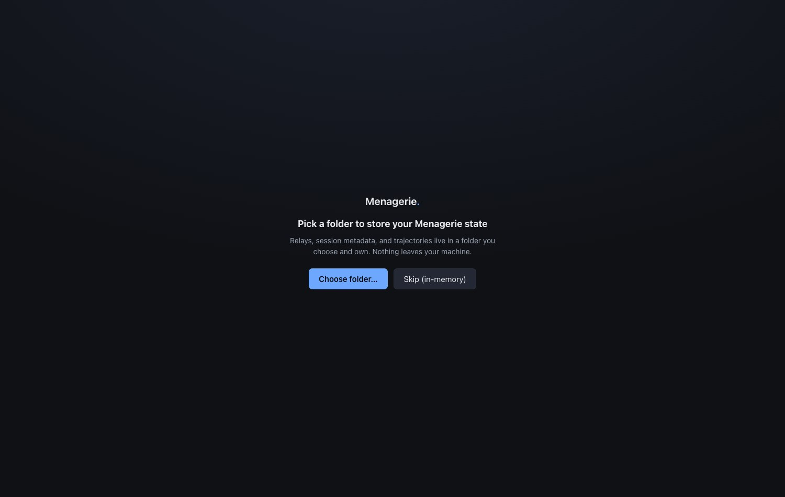
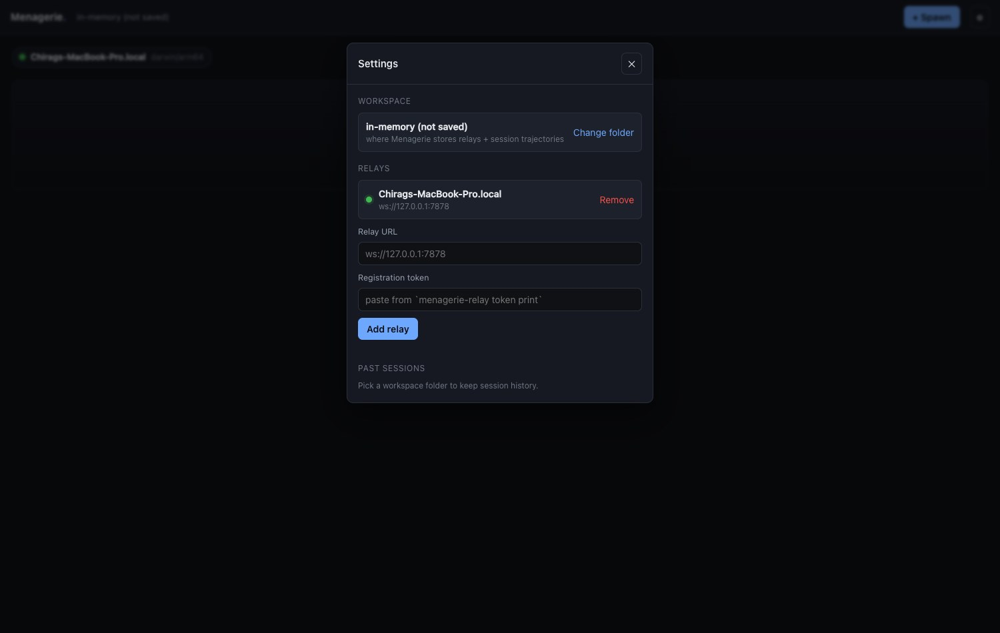
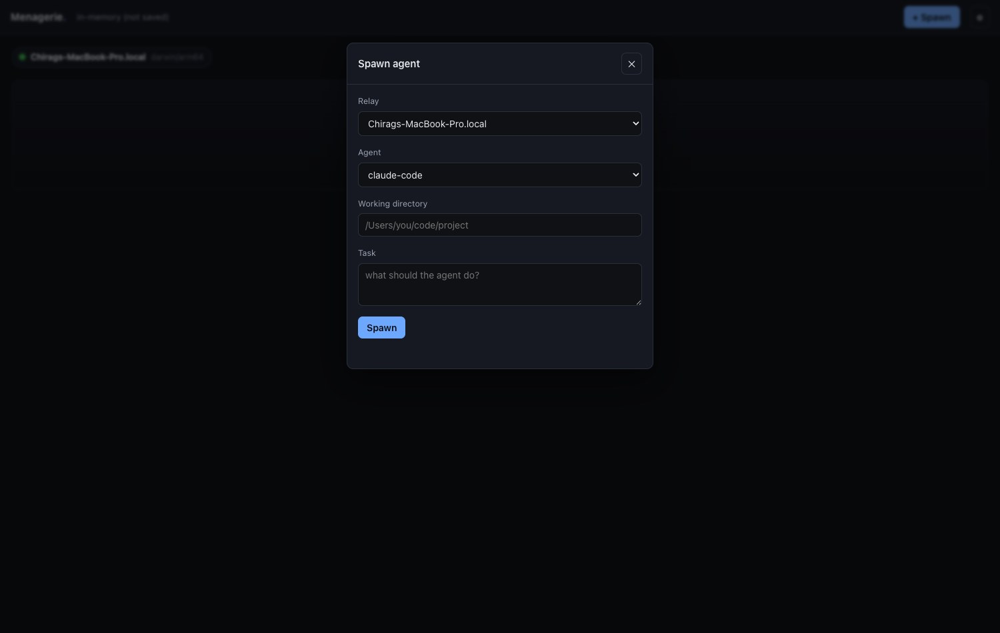
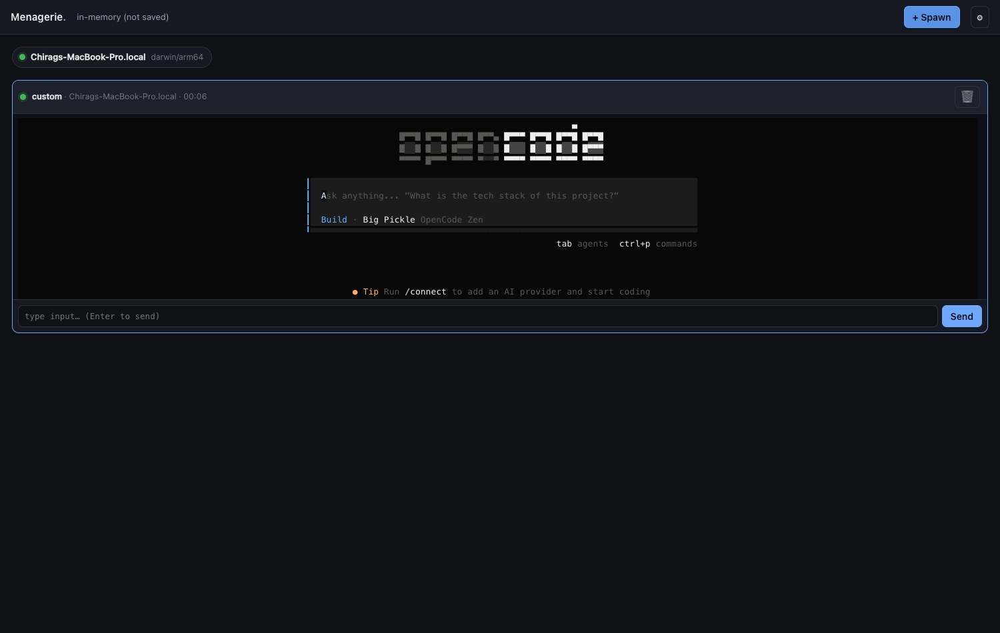
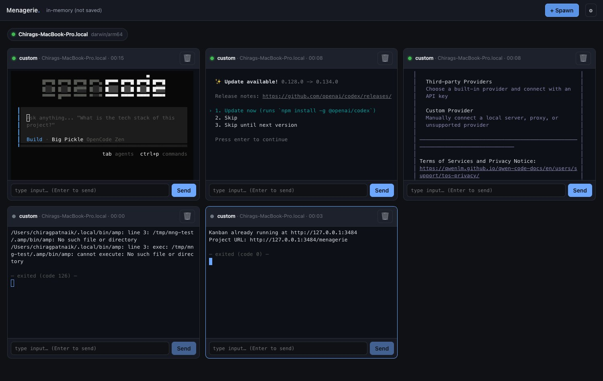
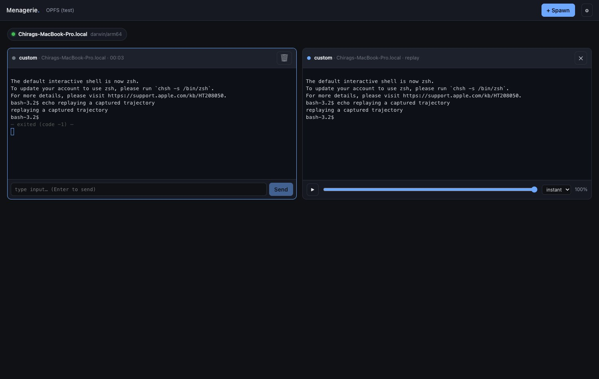

Menagerie.
One browser tab. Many coding agents. Anywhere they run.
Menagerie is a zero-server, vendor-neutral, browser-native control console for fleets of coding agents — mini-swe-agent, claude-code, codex, opencode, aider, and any TUI agent you wire up. The browser tab is the brain; small user-installed relays sit next to each agent and stream PTY bytes over WebSocket.
No NakliTechie server. No accounts. No telemetry. You own every piece — agents, relays, sessions, trajectories. This tour walks the v1.0 golden path: set up and start a relay, open the app and pick a workspace, register the relay, spawn an agent, watch it run, fill a tab with a fleet, and replay a finished session.
Before you start · Set up a relay
00Get a relay running
This page can't reach your agents until a relay is running next to them. A relay is one small Go binary you install and own. Do this once per machine where agents run — your laptop, a dev box, a server.
1 · Install it. Build from source (needs Go 1.21+), or grab a prebuilt binary from Releases when one is published.
# build from source
git clone https://github.com/NakliTechie/menagerie
cd menagerie/relay-go
go build -o menagerie-relay ./cmd/menagerie-relay
2 · Initialise it. Writes ~/.menagerie/relay.toml with a generated registration token and a sensible default config.
./menagerie-relay init
3 · Copy the registration token. The app needs it to authenticate against this relay. Print it any time:
./menagerie-relay token print
4 · Allow your app's origin. The relay only accepts WebSocket connections from origins you list — that origin check is the security boundary. The hosted app (https://menagerie.naklitechie.com) is allowed out of the box; if you open Menagerie from somewhere else, add that origin to allowed_origins in the config:
# ~/.menagerie/relay.toml
allowed_origins = [
"https://menagerie.naklitechie.com",
"http://localhost:8000",
]
!Origins are matched exactly, and "null" is deliberately not allowed by default — a sandboxed iframe also sends Origin: null, so allowing it would let any web page through. Add it by hand only for file:// use.
5 · (Optional) Wire up agents. The [agents] table maps an agent id to the command that launches it — e.g. claude-code → claude, mini → mini. The built-in custom agent runs whatever command you hand it, so you can drive any TUI agent without writing a shim.
6 · Start serving. Listens on 127.0.0.1:7878 by default. For a relay on another machine, front it with TLS (wss://) at a reachable address.
./menagerie-relay serve
That's the whole setup — the relay keeps running and its sessions outlive page reloads. Now open the app and connect to it.
Step 1 · First launch
01Pick a workspace folder
On first launch Menagerie asks for a folder it will own. Registered relays and captured trajectories live there — nothing leaves your machine. The handle is persisted so the same workspace reloads next time.

Step 2 · Connect a host
02Register a relay
Open Settings, paste the relay URL and its registration token (printed by
menagerie-relay token print), and add it. The browser opens a WebSocket, receives the
relay's hello, and registers. Once connected, the relay shows a green dot with its
host OS / arch and the agents it can spawn.

Step 3 · Start work
03Spawn an agent
Hit + Spawn and pick a relay, an agent, a working directory, and a task. Agents are listed alphabetically — no featured agent, no promoted shim. The relay mints a fresh session token per spawn and a tile appears.

Step 4 · Observe and steer
04Watch it run
A live tile carries a status dot, the agent · relay · timer header, and the agent's
terminal streaming through xterm.js. An input bar sends keystrokes straight to the PTY; the
kill button stops the agent. The dot turns red and the header pulses when the agent
needs input — answer without leaving the tab.

Step 5 · Scale up
05A fleet in one tab
Tiles flow into a flat auto-fit grid. Spawn as many as the screen holds — several agents on one or more relays, all updating in real time, in a single browser tab. One WebSocket per relay carries every tile on that host.

Step 6 · Look back
06Replay a trajectory
Every session's raw PTY bytes are captured to your workspace folder. Open a past session and it re-renders losslessly through xterm.js, with play, scrub, and speed controls (1x / 2x / 4x / instant). Close the tab, reopen later — the trajectory is still there.

Under the hood
How it works
The browser tab is the brain
A single static HTML file is the entire control surface. No daemon to run, no service to install on your own machine — open a URL and you have the console.
Relays sit next to the agents
You install a small relay on each host where agents run. It allocates a PTY per agent and streams bytes. The relay is yours, not NakliTechie's — pick the Go binary, a Python script, or an edge Worker.
One WebSocket per relay
The browser keeps a single connection to each relay; every tile on that host multiplexes over it by session_id. A per-session token, minted on spawn, gates input, signals, and resume.
FSA persistence — you own the files
State lives in a folder you grant via the File System Access API: relays.json, session metadata, and raw .pty byte streams. No backend database, no localStorage for secrets, nothing that phones home.
The protocol is the durable artifact
The WebSocket protocol is published and versioned — the app is just one consumer of it. Anyone can write a relay or a shim. And it doubles as the agent SDK: anything the browser can do, a supervisor agent can do over the same protocol.
Commitments
Hard NOT-to-do
These don't soften. If a feature requires breaking one of them, the feature doesn't ship.
- ✕No server. No NakliTechie-hosted backend, ever — not even an optional one. The only thing served is a static HTML file.
- ✕No telemetry. The relay doesn't phone home. The browser doesn't phone home. No analytics on how you use your agents.
- ✕No accounts. No login, no "Menagerie account," no subscription, no premium tier, no cloud.
- ✕No vendor preference. Agent types are listed alphabetically. No featured agent, no promoted shim, no bundled MCP.
- ✕No lock-in. The protocol spec is published; anyone can write a relay or shim. Relay tokens never leave your browser's FSA / Vault.